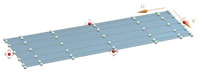
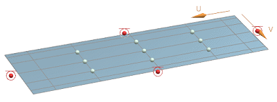
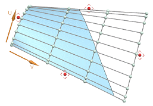
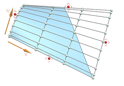
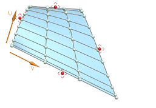

X-Form enhancements
X-Form enhancements
Estimated time to complete this lesson: 8–11 minutes
What is it?
The workflow of the X-Form command has been enhanced with the following updates.
-
You can now create a single X-Form feature using multiple faces.
-
You can now select poles and polylines from the graphics area when using the Proportional method.
-
The Proportional and Falloff advanced methods of previous releases have been combined into the new Proportional advanced method with increased pole control:
-
All – All poles are moved with a single master pole or pole row.
-
Selected – Only selected poles are moved with a single master pole.
-
By U/V – Poles in a defined U/V window are moved, and you can have multiple master poles.
-
-
The Keep Continuity options for the Proportional method are now named Boundary Constraints and have been relocated in the dialog box so you can now use it in conjunction with the core editing methods such as Move, Rotate, Scale, and Planarize.
-
The Lock Poles option has been added to the Boundary Constraints group so when the Advanced Method is off so you can lock pole movement in the U/V direction based on specified continuity constraints.
When Lock Poles is selected, as you constrain the boundary, only the available poles for movement are displayed, the poles within the constraints are not visible.
U/V min/max = Free (No Constraint)
U/V min/max = G1 (Tangent)
-
The Boundary Constraints options have on-screen continuity handles available at surface boundaries.
-
An Extraction Method options list has been added to the Settings group.
-
Original

Extracts the face based on the original parametric, rectangular surface.
Minimum Bounded

Extracts the face based on a rectangular border enclosing the trimmed surface.
Fit to Boundary

Extracts the face by fitting a quadrilateral surface using the trimmed boundary of the trimmed surface.
-
-
The Feature Save Method setting Absolute has been renamed to Static.
-
You can now use Edit Parameters on an X-Form feature without rollback to facilitate design-in-context workflows.
Where do I find it?
|
Application |
Modeling and Shape Studio |
|
Toolbar |
Edit Surface→Pole Editing Drop-down→X-Form |
|
Menu |
Edit→Surface→X-Form |
|
Location in dialog box |
Method group Boundary Constraints group Settings group |